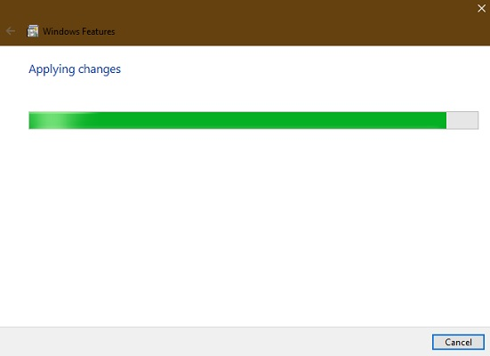
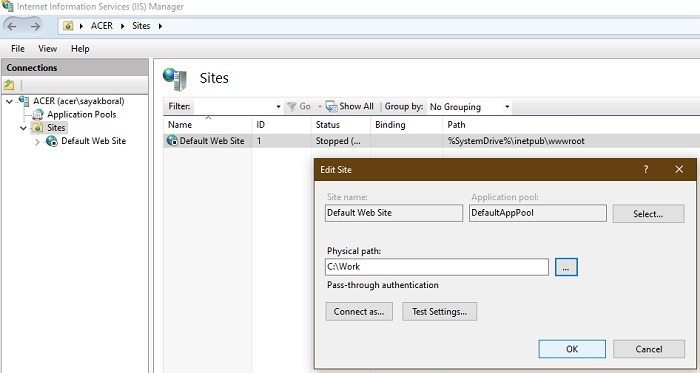

Según la propia información dispuesta en su sitio web, Nginx es un servidor HTTP, un servidor proxy inverso, un servidor proxy de correo y un servidor proxy genérico para TCP/UDP. En esencia Nginx es un servidor web de alto desempeño que puede manejar una carga alta, es decir, puede funcionar si su sitio web recibe muchos visitantes y peticiones debido a la facilidad de administrar sesiones concurrentes y contenido estático. Una de las ventajas que posee Nginx es que es una implementación asíncrona, diseñada para permitir que más solicitudes sean servidas simultáneamente pasando parte del trabajo de procesamiento a los hilos de escucha.
Características de Nginx como servidor proxy de correo electrónico:
Características de Nginx como servidor proxy TCP/UDP
Además, Nginx es compatible con un número muy variado de sistemas operativos:
Hay muchas versiones de Windows descargar versiones de Nginx , y Nginx recomienda usar la «versión mainline». Sin embargo, no encontrará ningún problema si descarga su versión estable más reciente para Windows.
clic para dirigirte a la página de la descargaComo primer paso, debe extraer la nueva carpeta. Puede utilizar 7-zip, WinRAR o cualquier otro software de compresión popular
Después de extraer el contenido del archivo en la carpeta original, tiene que mover la carpeta completa que vino con la copia de descarga incorporada. Tendremos que mover esto a Archivos de programa.
Pegue la carpeta en los archivos de programa. Vamos a ejecutar Nginx desde esta ubicación como un programa de servicio web por defecto.
Para instalar y ejecutar Nginx, seleccione y haga doble clic en el archivo Nginx.exe. Ahora ha sido activado para su uso posterior.
n el siguiente paso debe verificar si la instalación se ha realizado correctamente. Para ello, puede ir a su navegador predeterminado y escribir «localhost». Si ve la siguiente pantalla que dice que el servidor web de Nginx está instalado y funcionando correctamente, no hay problemas en su instalación de Windows 10.
Para detener Nginx, puede terminarlo desde la ventana Administrador de tareas.
Para ejecutar Nginx, debe utilizar Internet Information Services (IIS), que es un servidor web de Microsoft que sirve páginas o archivos HTML solicitados. Puede activarlo desde Activar o desactivar características de Windows en el Panel de control. Compruebe los campos obligatorios para Herramientas de gestión web y Consola de gestión IIS.

Tomará un tiempo para que IIS esté habilitado en su computadora a medida que se apliquen los cambios.
Puede abrir el Administrador de IIS directamente desde el menú Inicio. Aquí podrá acceder a la página web por defecto, que normalmente se encuentra en inetpub wwwwroot. Esto también se conoce como la raíz de la aplicación web .
Es útil cambiar la ruta física de esta raíz a una carpeta más deseable. Creé una nueva carpeta Work en C: y cambié la ruta física a C:Work
Después de esto, vaya a la carpeta Nginx que renombró en los archivos de Programa. Haga clic en Conf y seleccione nginx.conf. Este archivo se puede editar utilizando el editor de texto Bloc de notas++.
En Bloc de notas++, cambie la raíz a la ruta física editada que discutimos anteriormente.
Puede editar el archivo index.html en la carpeta raíz en una pestaña separada. Cambie el texto a lo que desea que el servidor web muestre en la pantalla.
Ahora, ejecute el programa Nginx.exe una vez más y escriba localhost en una ventana del navegador. El servidor web de Nginx resaltará las ediciones realizadas.
tiene una lista completa de aplicaciones de servidor web que puede utilizar para ejecutar varias aplicaciones en un PC con Windows.
Se muestra otro proceso de instalación mediante un video